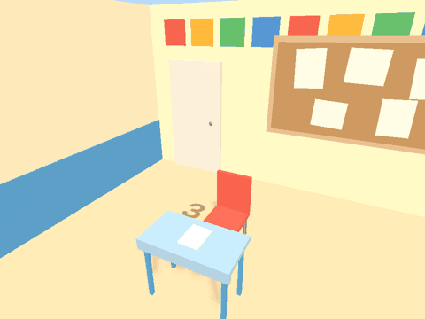
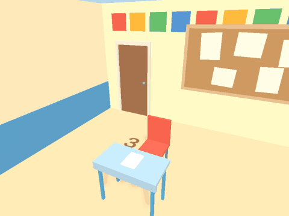
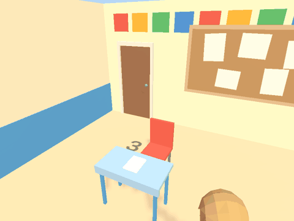
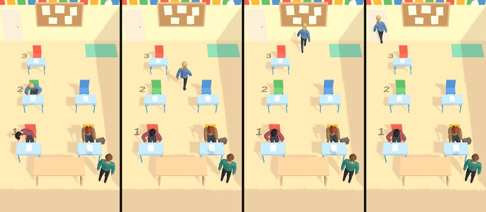
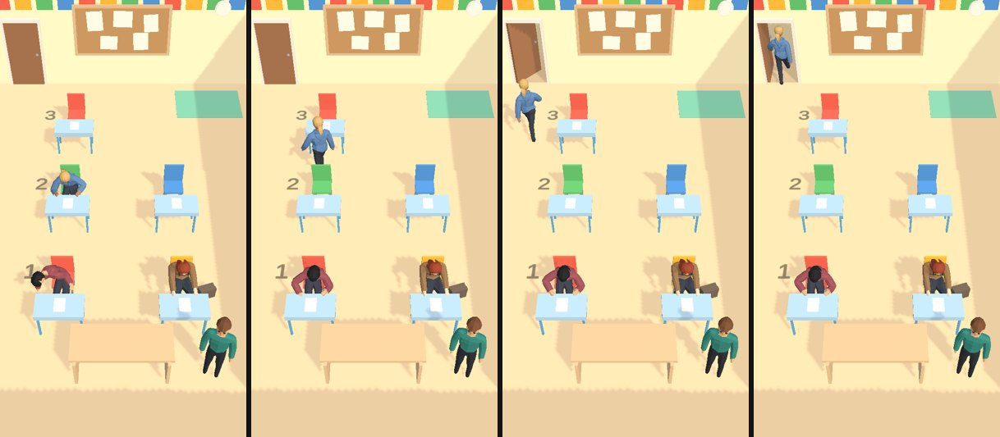
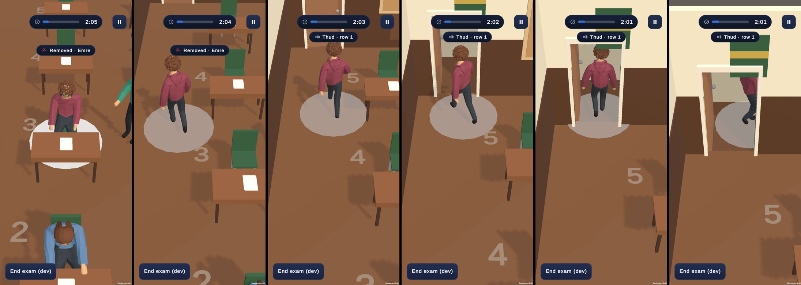

The owner saw students walk into walls and the door when they left the class. Measured across all eight school rooms, on a phone and a tablet, from every seat: almost every walk a student took went into something. Now each walk follows the room's clear floor, goes through the middle of a real doorway, the door opens before anybody reaches it and closes behind them, and nobody walks through anybody.
Fixed in every room and on both devices: 0 of 1,920 walks touch anything, against 1,882 before. Checked on a Galaxy A15 in Kingsley's room.
The back wall was solid and the door painted on it. Every removed or turned-away student walked along the wall, 0.39 m inside it, and vanished 0.8 m to the right of the door.
A doorway in the wall, a frame, a leaf that swings out on a hinge, and a short corridor behind. People walk through the middle of the opening and out of sight.
Out of a desk backwards, not sideways through the neighbour and the bags. Past the admission queue, not through it. Through the doorway one direction at a time.
The narrowest gap is 2 cm, where a single-desk aisle passes bags on both sides in the exam hall. That assumes a bag at every desk; usually half have one.
Maple, phone room, from a camera standing in the room facing the door. Frames every 0.2 s from Play mode, old code and new code, the same students.





Galaxy A15, Kingsley Academy, a removal followed by the room camera. Left to right: standing up, up the aisle, toward the open door, into the doorway, through its middle, out into the corridor.

Line numbers are in 5c6d204, the code before the fix.
RoomDresser.cs:202) and the door a
prefab slab in front of it (:234) that never moved. Nothing could walk through it.RoomLayout.ExitPoint
(RoomLayout.cs:111) was at MinX + 1.8, 0.8 m right of the door's middle, and 0.1 m
from the wall's centre. The last leg of every route ran along the wall at that depth, so a 0.34 m body was
0.39 m inside the wall and the door frame. M130 derived the door's place per room (:108), but the
exit point was never moved onto it.RoomLayout.Route (:338, :345) left and
entered every seat along the row at the seat's own depth: through the bags beside the desks, and at shared tables
(Eastgate, Brightpath, State University) through the neighbour sitting there.AdmissionChoreographer.cs:333,
:340). The queue stands exactly there.:317) while standing 1.15 m from the desk. They went back to the door's corner,
through the desks, and came back: 3.3 to 7.4 s instead of half a second.:321), so
people walked straight to it through chairs and desks.removal-walkout and door-queue, made for the old
single classroom before M130, and was never merged.All eight rooms × phone and tablet × every seat. Each walk sampled every centimetre with the body as a 0.34 m disc (the tap capsule, and how far a standing body's hands hang). Obstacles: walls, door frame and open leaf, corridor, desks, chairs, the supervisor's desk, wall fixtures and each school's dressing, everybody seated, a bag on both sides of every desk, and the two people queuing.
| Walk | Walks | Touched, before | Before, no bags | Touched, after | Closest, after |
|---|---|---|---|---|---|
| Removed, seat to door | 156 | 156 | 156 | 0 | 0.029 m |
| Moved to the free desk, seat to seat | 1,512 | 1,512 | 72 | 0 | 0.020 m |
| Admitted, check-in to desk | 156 | 156 | 114 | 0 | 0.020 m |
| Turned away, check-in to door | 16 | 16 | 16 | 0 | 0.020 m |
| First person in, door to check-in | 16 | 0 | 0 | 0 | 0.080 m |
| Into the queue from the door | 32 | 31 | 29 | 0 | 0.080 m |
| Stepping up in the queue | 32 | 11 | 11 | 0 | 0.020 m |
| All | 1,920 | 1,882 | 398 | 0 | 0.020 m |
"Before, no bags": a bag is a coin flip per desk, so this is the floor without any. Even then every removal and every turned-away student went into the wall or through the queue.
Back wall at the top, the corridor behind it. Red dashes: the old walk, its worst contact shaded. Green: the new walk. Circles at the end: the body.
Seconds at the game's walking speeds (2.6 m/s shown out, 2.2 m/s otherwise), the mean over every room, device and seat. No gameplay rule reads these: a removal, a relocation and an admission are decided in the simulation at once. Bathroom trips have no walk.
| Walk | Before | After | Change | Why |
|---|---|---|---|---|
| Removed (with the 0.6 s stand) | 4.67 | 4.83 | +3% | Every room's mean within −1% to +6%. The door is 1 m further than the old end point. |
| Moved to the free desk | 5.53 | 3.92 | −29% | The old route changed aisles only behind the back row; the row gaps are shorter. |
| Admitted to a desk | 4.00 | 3.51 | −12% | Shorter lanes, longer only where the queue is in the way. |
| Turned away | 3.89 | 5.35 | +38% | The old walk went through the queue; this one goes round it. |
| First person in | 3.68 | 4.53 | +23% | They used to appear inside the room. Now they come through the door. |
| Next person up after a decision | 5.51 | 0.52 | −91% | The walk back to the door is gone: they step up 1.15 m. |
The door's stamp is on screen for 0.94 s after a decision. The next person is now at the desk after 0.52 s, before their card arrives; before, the card waited 3.3 to 7.4 s for them.
RoomWalkClearanceTests): the 1,920 walks above, against
everything in the room. The same check of the old routes finds 1,882 touching.WalkDoorTests): every renderer the room builder makes at
body height lies inside one of the footprints the clearance test uses, in every room on both devices.WalkDoorTests): a removal from every seat of every room, at 60 and
10 frames a second. Wide open whenever the body is in its swing, through the middle of the doorway, shut behind
them, nobody still holding it.WalkDoorTests): somebody coming in and somebody
going out meet at the door. A walker waits for somebody standing in its way, and is never stopped for good.WalkPathSceneTests): a whole admission with a rejection, then a removal, in
the Classroom scene. On every frame: no body in a wall, desk or the door, nobody in anybody, nobody in the doorway
unless the door is wide open. The next person reaches the desk within the stamp's time plus 1.5 s; the walking body
is over its root.